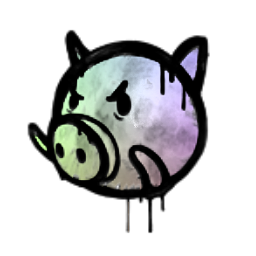
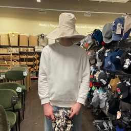

Поросятское Сквадство
nil

Поросятское Сквадствоnil
 | |
| Имена | |
|---|---|
| Ya Lotos | |
| Ya Hueglotos | |
| Егор | |
| Ебырь Кости |
YaLotos так же известен как Егор или Ебырь Кости был и остаеться основателем Поросятского Сквадства. Этот человек являеться Админом сервера и создателем всех ивентов на сервере.
Яростный игрок в Dota 2.
Любит сосать хуи.
Создал все события на сервере.